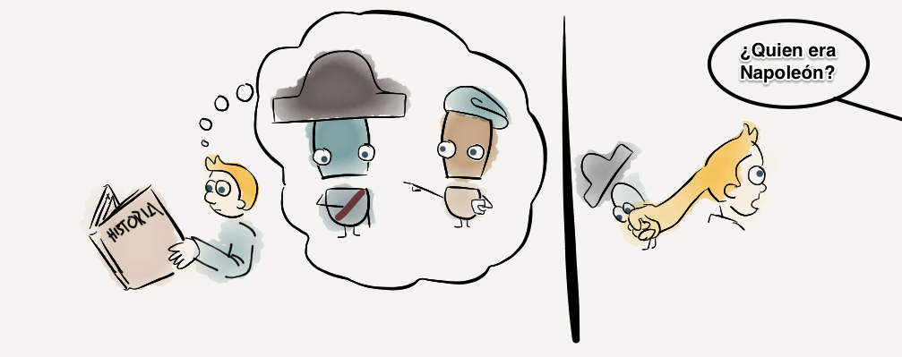

Medidas de Memoria
Medidas Directas. Memoria Explícita

Las pruebas de memoria directas son aquellas en que se le pide abiertamente a la persona que recupere eventos pasados específicos. Implican que la persona tenga la intención y haga un esfuerzo consciente por recuperar una información de la que tiene conciencia de que se le presentó con anterioridad o una experiencia a la que fue expuesta.
Las pruebas directas varían en el número de claves que se proporcionan, en la cantidad de la información a recuperar y en las estrategias de recuperación utilizadas:
- Recuerdo Libre: exige recordar un conjunto de elementos estudiados sin seguir un orden determinado.
Es la prueba más dependiente del contexto como clave de recuperación así como de las habilidades de la persona para organizar la información al codificar y para elegir una estrategia de recuperación.
- Recuerdo con claves: exige recordar contenidos muy específicos con la ayuda de pistas (por ejemplo; palabras asociadas o su inicial). Al proporcionar claves resulta más sencilla que la prueba de recuerdo libre.
- Reconocimiento: Estas son aún más sencillas que las anteriores ya que suponen presentar un determinado estímulo y que la persona juzgue si previamente éste se había presentado o no.